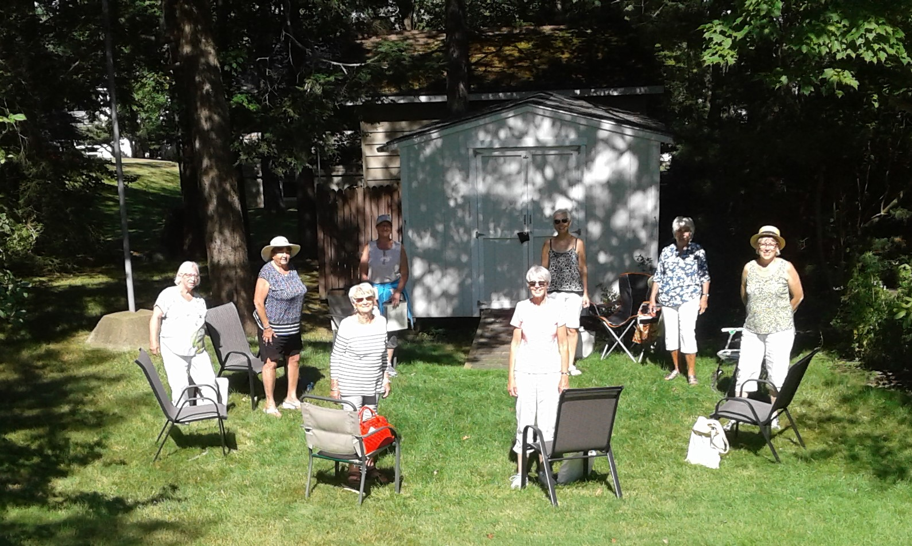

Covid Update
Parish Council passed a motion as follows: Masks are no longer mandatory but optional according to your personal comfort zone.
Welcome to St. Peter's
Welcome to the website of St. Peter's Anglican Church, Birch Cove. Here, at St. Peter's, you will find that we are an energetic group of Christians who, as our vision statement states, create a spiritual home by nurturing our growth in faith and exercising our ministry by reaching out to others. We are a community that welcomes others and encourages them to become part of our family and to practice their faith by joining us in worship and participating in one or more of our ministries or by introducing us to new ministries.
Our ministries include several outreach and community support programs and our liturgies are enriched by enthusiastic Lay Ministers and numerous congregation members.
We are located just a few kilometers from the peninsula of Halifax City on the corner of the Bedford Highway and the Kearney Lake Road. Our location offers quiet residential living combined with a mixture of businesses for shopping convenience. Also, close by there are schools, postal services and Mount Saint Vincent University as well as a few historic sites such as Prince's Lodge.
History
In the late 1940's, families in the village of Birch Cove found it difficult to attend St. John's Anglican Church in Fairview. Instead, many chose to attend services held at the small United church in Rockingham. Aware of the need for an Anglican church in Rockingham, Florence Dakin, on her death, left land to St. John's Church with the wish that it be used as the site for an Anglican church. The land in Birch Cove included a pine covered knoll which sloped down to a tidal pond. It was agreed that a mission church to St. John's would be built on that site with the front of the church facing Dakin Drive.
Donations and pledges were collected on a monthly basis. Construction of St. Peter's was begun in the spring of 1951 and the cornerstone laid on April 30th. The church was dedicated in October of the same year by the Bishop, The Rt. Rev. Robert Harold Waterman, with 200 people attending the first service. A number of their family members are still worshipping in St. Peter's today.
As a mission church of St. John's, the first minister was Rev. George Bickley, 1950, followed by Rev. George Arnold, 1951-1953 and Rev. Wilfred Meadus, 1953-1960. As a free standing Anglican church, St. Peter's was blessed with three ministers from 1960 until 1992. They were Rev. Douglas Haviland, 1960-1965, Rev. Wildred Meadus, 1966-1970, and Rev. Vernon Cluett, 1970-1992. Canon Philip and Ruth Jefferson served as interim ministers between January and July of 1993. Rev. Dr. Timothy Appleton became our minister on August 1st, 1993.
We mourned the passing of the Rev. Dr. Timothy Appleton in September 2002, while in service as rector. Rev. James Purchase was priest-in-charge from 2002-2003. Rev. Jane Clattenburg was our minister 2003-2008 and Rev. Robert Richmond 2008 - 2013. David Dellapinna, Oct 2013 - 2017.
In naming the church it was felt that St. Peter's was appropriate since the two nearest Anglican churches were named St. James and St. John's. In 1960, St. Peter's became a parish. In 1962, the 'tidal pond' was filled to allow access from Kearney Lake Road, and H.W. Corkum Construction began work on 'Dakin Hall'. The new hall was officially opened in 1964 by Bishop, The Most Rev. William Wallace Davis.
St. Peter's has always been a community church and in 1955 opened its doors to the Boy Scouts of Canada. The 1st Birch Cove Scouts were active for many years and used the hall as their home base. Dakin Hall is still the home to many active groups, including the Boy Scouts of Canada.
Today....
St. Peter's Anglican Church serves the area of Clayton Park West and South Bedford, although families travel from beyond this area. It is one of the fastest growing areas in metro, and this growth has brought new families to the parish, resulting in a diverse and enriched congregation. St. Peter's maintains its reputation as a community church and welcomes all to its doors.
Who was Saint Peter?
SAINT PETER (died about AD 64), was the most prominent of the 12 disciples of Jesus, often serving as their spokesman and consistently named first in lists of the Twelve. At Caesarea Philippi, he proclaimed Jesus to be the Messiah and was subsequently rebuked (according to Mark 8:33) or praised (see Matthew 16:17) by Jesus. Jesus foretold that Peter would deny him three times on the night of Jesus' arrest and, when the prophecy was fulfilled, Peter suffered a great deal of guilt. However, the first appearance of the resurrected Jesus was to Peter.
It is known that the name that he was christened with, and that he grew up with, was Simon. At that time, the Greek word petros("rock") and the Aramaic equivalent, cephas, were not used for personal names. Thus, "Peter" seems to be symbolic, only having come to be his name through the passage of time.
Peter was perceived to have been entrusted with a special vocation to preach the gospel as opposed to tangible authority. Peter played a crucial role in the early Christian church in Jerusalem, having received a special call to preach to his fellow Jews. He also took the important position that the Christian message of salvation to all did not require non-Jews to follow the legal and ritual customs of Judaism. Designated by Jesus as the rock upon which the church was to be founded, he conducted his missionary travels in the company of his wife. He died a martyr in Rome.
Images above
On the right is a beautiful painting of the church by Anne Ward.
Parish Council
Council consists of 11 Members, including the rector, treasurer, secretary, 2 wardens, and 2 lay delegates representing both Synod & Regional Council.
Finance
Finance Committee - This committee advises and gives direction to Parish Council on all matters dealing with the finances of the church.
The Finance Committee meets in advance of the Parish Council and provides valued recommendations to the Council.
It consists of 7 members, including the rector, treasurer, 2 wardens, envelope secretary, and 2 members at large.
Offering Counters - Counters prepare and separate for deposit all monies donated to St. Peter's Church each Sunday morning.
Altar Guild
The altar guild is a group of dedicated women responsible for preparing the sanctuary area of the church for Sunday service.
Choir
Men, women and children who enjoy singing, are welcome to join our choir for a weekly practice to enhance our 10:00am Sunday service.
Ladies Guild

The St. Peter's Ladies Guild, Birch Cove, was founded in 1951. The first meeting was held at the home of Mrs. R. Garden.
The Ladies Fellowship meets regularly and organizes the fund raising events, and promotes fellowship. They are also available to cater for special events.
New members are always welcome. The Ladies Guild is a strong, important group within the life of St Peter's.
Men's Fellowship
Men of St. Peter's meet for breakfast at 8:00am the third Saturday of each month, except July/September.
Sunday School
An enthusiastic group of volunteers provides an enriching Sunday school program for children of all ages. Family centered activities are planned throughout the year.
Caring
The caring group is a group of parishioners reaching out in Christian love, to aid the church membership and the community at large in meeting their emotional and social needs.
Physical Assets Working Group (PAWG)
This is a group of volunteers working to keep the buildings and grounds in good shape.
Licensed Lay Ministers & Eucharistic Ministers
These parishioners assist the rector in administering the sacraments of Holy Communion.